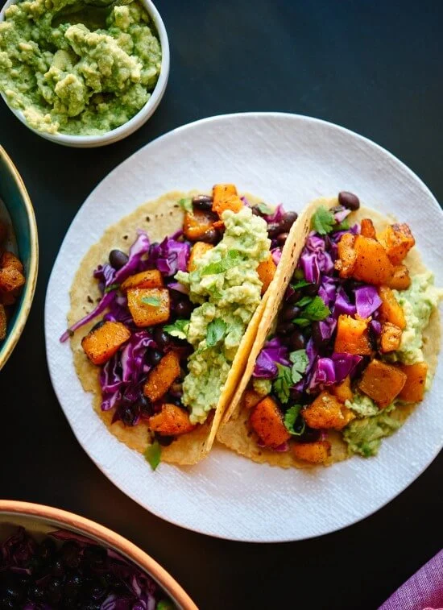

Butternut squash tacos

Description
I love tacos and I love butternut squash and this is a great way to make tacos without meat.
It's vegan the way I do it but you can always add the ingredients you want and make it your own.
Ingredients
- Butternut squash
- Tomatoes
- Cucumber
- Avocado
- Taco shells
- Olive oil
- Taco seasoning
- Sea Salt
- Cut the butternut squash in half, take out the seeds with a spoon and put it in an ovenpan & roast it in the oven for 1 hour 50 minutes at 175C
- When the butternut squash is approaching done you can start preparing the condiments like slicing up the tomatoes and cucumber
- Mash the avocado with a spoon, sprinkle some sea salt on and mix it around
- When the butternut squash is done roasting you put olive oil in the frying pan along with the taco seasoning and stir it around
- When the spices have been in the pan for 2 minutes you can start adding the butternut squash with a spoon
- Stir it all together and then you're done. Assemble all your condiments and enjoy!